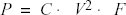
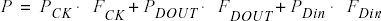
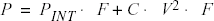

Use the following steps to calculate the power consumption of your design. The list of
screens and steps appear in the order in which you should view them to analyze your power
accurately.
Summary tab: view global power at the design level and view its impact
on junction temperature.
Domains tab: define clock domains and specify a clock frequency and a
data frequency for each clock domain.
Analysis tab (optional): view detailed hierarchical analysis of your
power consumption. If your power consumption exceeds your budget, this step
helps you understand where there is room for improvement.
Frequencies tab (optional): specify individual pin frequencies. This
step provides pin-by-pin control of the frequency.
Probabilities tab (optional): specify probabilities. You can use the
default probabilities or set your own.
12.4.2 Extracting Power Consumption of a Specific Clock Domain
To calculate the power consumption
of a single clock domain (clock tree and data path) in a design:
Set SmartPower in toggle-rate mode. This is the default setting. To confirm
that SmartPower is in toggle-rate mode, choose Preferences from the
File menu. Select the Use Toggle Rates check box.
In the Domains tab, set all the Clock Frequencies to zero except
for the clock domain for which you are calculating the power consumption.
SmartPower allows you to estimate the power consumption related to I/Os. You can then
analyze power consumption in detail.
To display I/O power
consumption:
In the Summary tab, select By Type from the Breakdown
drop-down list. The grid displays the total power consumption of all I/Os in
the design, as well as all other components. If you use different I/O standards,
and different Vcci power rails, you can also display the power consumption for
each rail by selecting By Rail from the Breakdown drop-down list.
Breakdown By Rail shows the power consumption and current for each
Vcci rail in the design.
In the Analysis tab, select the highest hierarchy level in the Hierarchy
tree in the left pane. Select By Instance from the Breakdown drop-down
list.
In the Analysis tab, unselect all categories under Instances
Contributions except I/Os, and then click Apply. The table then
displays a list of all I/Os in the design, along with the power contribution of
each individual I/O. The columns display important I/O attributes: external port
name, load, standard, drive- strength, slew, and macro.
In the Probabilities tab, you can control the output probability of each
tri-state and bidirectional I/O. The probability is the percentage of time that
the I/O is used as an output. The default value can be changed and a specific
value can also be set for each bidirectional or tri-state I/O.
When you run SmartPower, it researches your existing clock domains and partitions your
design automatically.
You may want to review the list of clock
domains in the Domains tab to ensure that all the clocks of your design are
included in the list. Add or remove clocks as necessary.
To add a new clock
domain:
Click the Domains tab, and then click the Add Domain button.
To create a new clock, select a Potential Clock Pin, specify a clock and
data frequency and click Create.
The new clock domain appears in the Domains window. If you select an
existing clock pin from the drop- down list, the lists of clock pins and data
pins of this new clock domain are computed automatically based on the netlist
topology.
Note: Select Use
Toggle Rates in the SmartPower Preferences to define your data
frequency as a percentage of your clock frequency. If your data frequency is
20% of your clock frequency, type 20 in the Data Frequency
text box.
If you want to create an empty clock domain and fill the lists of
clock-pins and data pins manually, do not select a clock pin. Instead, type a
new name for your clock domain.
12.4.5 Verifying Lists of Clock and Data Pins of a
Clock Domain
Beyond the verification of the list of clock domains, you may also wish to verify that
the lists of clock pins and data pins computed for each clock domain are
correct.
To verify the lists of clock pins
and data pins of a clock domain:
Click the Domains tab and select a specific Domain in the
list.
Display the list of clock pins or data pins of this Domain. A drop-down
list in the Domains tab allows you to select clock pins or data pins.
SmartPower displays the list of pins corresponding to your selection below the
drop-down list. You can add or remove clock pins and data pins as
necessary.
Remove a pin from a clock domain. Highlight the selected pin and click
the Remove button. The pin is removed from the clock domain and is made
available in the list of pins that you can add in another clock domain.
Highlight the selected pin in the list of pins that are not yet in a domain and
click the Add button to add a pin in a clock domain.
This pin is added to the clock domain. The pin is a clock or data pin,
depending on the specification of the drop-down list when you clicked the Add
button.
Note: You cannot add a pin that exists in another domain until
you free it from its existing domain. The pin is unavailable until you
remove it from that domain.
After you verify that all the clocks of your designs are
correctly identified and constructed, specify the correct clock and data frequency for
each clock domain.
Select the Clock/Data frequency cell and enter a new value.
SmartPower defaults to 0 MHz for the clock frequency. Import your clock
frequency from SmartTime by using the Initialize Frequencies dialog box in
SmartPower or input your target for each clock frequency in the Domains
tab. You must also specify a data frequency (5% of your clock frequency
is a typical guideline for your data frequency—this corresponds to a toggle
rate of 10%).
Not all the pins/gates/nets of your design are associated with a specific
clock. For example, the frequency of a design input port is not always
correlated to a clock frequency. By extension, all pins that are upstream of
the first level of sequential elements are not associated with any clock.
SmartPower creates an InputSet by default that it uses to group all the pins
that are controlled by design inputs (instead of sequential elements). You
may want to view and verify the InputSet to further evaluate your
design.
Click the Domains tab and select the domain named InputSet in the
list.
Verify the list of pins of this domain. All the input ports of your design
(except the clocks) belong in the InputSet. All pins between these input
ports and the first level of sequential elements belong in the InputSet.
You can add or remove pins as necessary.
Specify an average input frequency. SmartPower uses the same frequency for all
pins of the InputSet. The default InputSet frequency is 1 MHz. Enter a new value
to change it.
You might want to split the InputSet into several sets in order to specify different
frequencies. For example, you might want to create a ResetSet—a reset tree with a very low
frequency.
To split the InputSet:
Create a new set of pins: In the Domains tab, click the New
button, and select Set of Pins from the drop- down menu.
In the Create Set of Pins dialog box, type a name and a frequency for the new
set and click Create. The new set of pins appears in the Domains window.
You can only create an empty set of pins, but it is possible to add pins to this
domain later.
Remove a group of pins from the InputSet. Click the Domains tab
and select the domain named InputSet in the list.
Select the pins that you want to remove and click the Remove
button.
The Frequencies tab allows you to specify an average clock and data frequency for
each clock domain, and also an average frequency for each set of pins. This gives you an
initial estimate of the power consumption of your design. However, if this estimate is not
sufficiently accurate, you can refine it with a pin-by-pin annotation of the
frequency.
The following procedure describes
how to set the frequency of an individual pin. Performing this procedure does not remove
the pin from its clock domain. A frequency annotation merely overrides the domain level
frequency.
Locate the pin in the Frequencies tab. You may need to select different
clock domains from the drop-down list on the Frequencies tab. You can use
filters to facilitate this search.
Select the pin(s) in the grid and click the Set frequencies for selected
pins button.
Enter a new frequency value and click OK. This specifies a new frequency
for the selected pin(s).
12.4.11 Changing the Frequency Annotation of a
Pin
The following procedure describes
how to change the frequency annotation of an individual pin. This may be useful when you
import a VCD (value change-dump) file (see ).
Locate the pin in the Frequencies tab. You may need to select
different clock domains from the drop-down list on the Frequencies tab.
You can use filters to facilitate the search.
Select the pin(s) in the grid and click the Set frequency for selected pins
button.
Enter a new frequency value and click OK. This specifies a new frequency
for the selected pin(s).
12.4.12 Removing the Frequency Annotation of a Pin
This procedure describes how to
remove the frequency annotation of an individual pin. This may be useful when you import
a VCD (value change-dump) file.
Locate the pin in the Frequencies tab. You may need to select different
clock domains from the drop-down menu on the Frequencies tab. You can use
filters to facilitate the search.
Select the pin(s) in the grid and click the Reset frequencies for selected
pins button. This removes the specified frequency from the selected
pins.
The Probabilities tab allows you to specify the default output probability
value for memory blocks, and tristate and bidirectional I/Os. In addition, you can increase
the accuracy of the power estimation by annotating the probability of specific
pins.
To specify or change the probability
for one or multiple pins:
Locate the pin(s) in the Probabilities tab. You can use filters to
facilitate this search.
Select the pin(s) and click the Set probabilities for selected pins
button.
Enter a new probability value and click OK.
12.4.13.1 Specifying or Changing Probability for One or More Pins
The Vectorless estimation method is an accurate method of annotating individual pins with
frequencies and probabilities. It uses primary inputs, clock frequencies, and nets
annotated with other methods as a starting point, and uses a Monte Carlo simulation to
annotate all nets in the design with frequencies and probabilities.
Vectorless estimation is available for SmartFusion 2, IGLOO 2, RTG 4, PolarFire and
PolarFire SoC families of devices.
Vectorless estimation can be enabled from the Initialize Frequencies and Probabilities
dialog box or from the VCD Import dialog box.
Changes to probabilities or frequencies in the Probabilities, Frequencies, or Domains
tabs result in an out-of-date vectorless estimation. To update vectorless estimation,
press the refresh vectorless button.
Click the Summary tab to view global power consumption at the design level.
The Summary tab shows your design's estimated power consumption and temperature
information.
The power estimation reported in the
Summary tab is the total static and dynamic power consumption of your design.
For a more detailed view of this power consumption, click the Analysis tab.
To
estimate the junction temperature:
Verify your package. You cannot change your package directly in SmartPower,
because it may render your place-and-route information (and thus it may severely
impact the total power consumption). To choose another package, use Designer
> Tools > Device Selection.
Click the Summary tab and select a Cooling style in the list.
Thermal resistance changes automatically when you update the cooling
style.
Specify an ambient temperature. Enter an ambient temperature (default
value is 25ºC) and click the Set button.
Note: The junction temperature value changes according to the package, cooling
style, and ambient temperature values you choose.
The Analysis tab shows the estimated power consumption of individual blocks,
gates, nets, I/Os, and memory, and allows you to make a hierarchical analysis of your power
consumption.
The Analysis tab may also
help you to improve your power consumption by identifying the components that consume a
significant amount of power.
To identify the components consuming the most
power:
Use the Analysis tab to expand the design hierarchy. The Analysis
tab allows you to expand your design hierarchy and view a complete list of
the blocks in your design. In the hierarchy window, click the + next to
your design to view the items in the hierarchy. Click the + next to a
sub-block to view its sub-elements.
Figure 12-68. Analysis Tab Dialog
Box
Click to select a block. By default, SmartPower selects the design-level block,
but you can always select another block in the hierarchical tree. The Report
window displays the list of sub-elements of the selected block. Initially, this
list includes all sub-elements. The grid in the Analysis window displays a
breakdown of the power of the selected block by type. This breakdown provides
you a good overview of which areas of your design you should optimize for
power.
To find the components that use a significant amount of power, choose By
Instance from the Breakdown drop-down list.
Sort and filter the sub-elements to find the component that is using the most
power. The Analysis window displays the list of sub-elements of the selected
block. By default, this list includes all sub-elements. The grid contains
columns for name, type, power, driver, fanout, macro, I/O standard, output load,
output drive, slew, port, domain and frequency. You can limit the list of
sub-elements to a list of sub-blocks, nets, gates, I/Os, memories, or any
combination of these five classes of sub-elements. You can sort the list
according to any column by double-clicking the column header.
SmartPower calculates the static power and the dynamic power of your design, for given operating conditions and operating modes:
Static Power: summation of the static power consumed by each element of the design.
SmartPower provides a static power consumption of the array. This value is
die-dependent. This value is also a function of the operating mode. For some families,
SmartPower also considers a static power contribution per I/O bank. For specific I/O
technologies like voltage referenced I/Os or differential I/Os, SmartPower also
considers a static power contribution per I/O.
Dynamic Power: summation of the dynamic power consumed by each element of the design
(nets, modules, I/Os, RAMs, FIFOs, PLLs, etc.).
Operating Conditions: SmartPower calculates power consumption in Worst, Typical, or Best operating conditions. SmartPower uses the following as general guidelines:
It applies a voltage derating to dynamic power contributions. Higher voltage typically leads to higher power consumption.
It applies a temperature derating to static power contributions. Higher temperature typically leads to higher power consumption.
It applies no radiation derating.
Operating Modes: SmartPower calculates power consumption in Active, Static, Flash*Freeze,
Sleep, and Shutdown operating modes when applicable for your design.
The following examples are for general evaluation purposes only. They are not a precise
representation of the actual calculations, since each calculation takes into account
family-specific information.
For a net,

where C is the total capacitive loading of the net
(extracted from the routing topology), V is the net's voltage swing, and F is
the average switching frequency.
Note: For the ProASICPLUS family,
SmartPower extracts the capacitive loading of a net from a Wire Load
model.
For a module, the power is computed using
a characterized library (by family and die-size) describing a specific power model
for each type of module. For example, the power model of a flip-flop is given by

where FCK is the average clock-input
frequency for this flip-flop, FDOUT is its average data-output frequency, and
PCK, PDOUT, PDin are three constants estimated by electrical simulation and
silicon characterization for this flip-flop module, and FDin is its average
data-input frequency.
For an I/O, the formula used for computing the power consumption depends on the I/O technology and the family. For example, for a TTL output, the dynamic power is given by

where C is the output load (derived from what you have set in the I/O Attribute Editor GUI, typically 35 pF for TTL), V is the output's voltage swing (3.3 V for TTL), and PINT represents an internal power contribution dissipated in the pad, and F is the average switching frequency of the I/O.
For a complex block, like a RAM, a FIFO, or a PLL, SmartPower uses a high-level power model that integrates design parameters.
SmartPower computes all the constant parameters of these equations automatically. However, the
frequencies depend on the target frequencies of your design. Since it is impractical to
enter each frequency manually, SmartPower has several flows that help you estimate the
frequencies and calculate the power consumption.